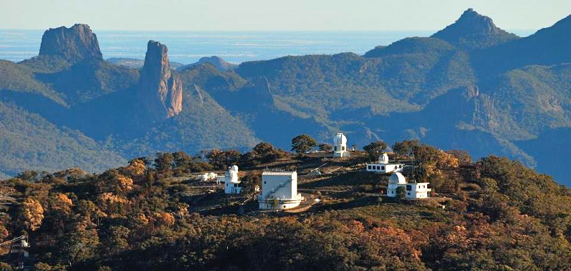
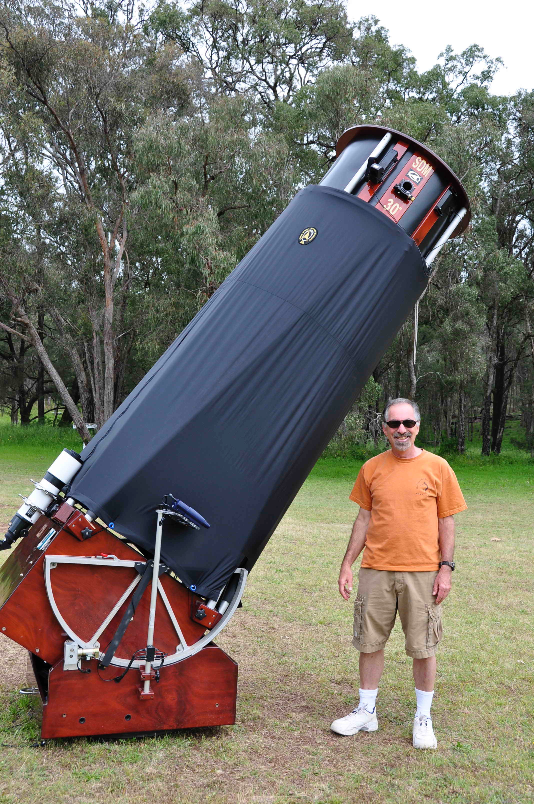

Nov 2010 (part 1) Australia
Last weekend, I returned from a two-week observing trip to Australia. Several months ago I noticed the Three River Foundation (3RF), which sponsors the OzSky Star Safari (ozsky.org) each year in March or April near Coonabarabran, was planning a second no-frills (observing only) 7-night star party in early November. Although I've made three previous observing trips to Australia in July 2002, July 2005 and April 2008, the different season appealed to me as the LMC and SMC would be well placed on the meridian. In addition there would be loads of galaxies, both bright and faint, in Sculptor, Fornax, Grus, Phoenix and the more obscure constellations of Indus, Horologium, Hydrus, Reticulum and Dorado. I've made a 30-year observing project to view the entire 7500-object NGC (now 94% complete across the sky) and this was a perfect opportunity to pick up many of the remaining southern objects.
Coonabarabran is located about 280 miles northwest of Sydney (a 6.5 hr drive), near the Warrumbungle National Park (https://www.warrumbungleregion.com.au/Home) and Siding Springs Observatory, home of the 154-inch Anglo-Australia telescope.

For their star parties, 3RF provides the telescopes and support, including a fully equipped 30-inch f/4.5 Obsession clone (built by SDM). As a result, it is not necessary to drag along any observing gear, though I did bring a few Ethos eyepieces and several binders filled with Megastar-generated finder charts. As it turned out, although up to 20 participants were expected, I was the only U.S. observer who signed up (the other, Kee Yang Chung, was from Korea) and I had exclusive use of the 30-inch!

Lachlan McDonald and Tony Buckley were gracious Aussie hosts and I was lucky enough to be the main focus of their hospitality. During the day, Lachlan and Tony escorted me and Kee Yang to several local sites of interest including an inside tour of the Siding Springs Observatory to see the 154-inch Anglo-Australian telescope (AAT) and the 48-inch Schmidt telescope (UKST), as well as the Compact Radio Telescope array near the town of Narrabri.
As far as the weather, the prospects looked pretty dismal the few weeks leading up to the star party, as there was consistently cloudy conditions and rain throughout New South Wales. In fact, the clouds continued throughout the week at Coonabarabran, but at least for the first 4 days the skies cleared by sunset and we had mostly clear nights with some impressive SQM readings (21.85-21.89). The one negative was high relative humidity, though the 30-inch was equipped with dew heaters for the secondary and eyepieces. On the 5th day, though, the clouds thickened, thunderstorms arrived and we were shut out from observing on the last 3 nights.
Although this was my fourth trip to Australia, I’m still disoriented as soon as it gets dark and unfamiliar star patterns emerge. Looking to the west around 9:00 PM, the Milky Way was setting parallel to the horizon, but I couldn't make sense of the stars. Very low on the horizon, Antares, with its distinctive orange color, was just visible, but where was the rest of the Scorpius? About 20 degrees above Antares were two fuzzy patches, which binoculars revealed were M6 and M7. Suddenly the constellation made sense - sort of. The The visible portion was the "bottom" and stinger of the Scorpius, south of Antares, which was sticking straight up forming a sickle or question mark! The Milky Way brightened to the upper right and I knew this must be Sagittarius, except it took a few minutes to connect the unfamiliar pattern to form the never-seen-in-the-northern-hemisphere "Upside-down Teapot" asterism.
Due south, the Small Magellanic Cloud (SMC) is a nearly uniform five-degree oval patch, about 45° up in the sky. The showpiece globular 47 Tucanae appeared as a small fuzzy glow off the upper right (NW) edge. In my 10 × 30 IS binoculars, though, a string of 3 or 4 fuzzy patches stood out in the upper left side (NE) of the SMC. Mag 0.5 Achenar, the brightest star in Eridanus (not visible from back home), was shining about 15 degrees to the left of the SMC. The brighter and larger LMC was lower to the east, but rising, with more visible structure than the SMC, including a brighter "bar" down the center. The magnificent Tarantula Nebula, the only naked-eye extragalactic HII object in the sky, appeared as a fuzzy knot towards the lower end.
Scanning around the sky, Alpha Centauri, our nearest stellar neighbor and arguably the best double star in the sky (mag 0.1 and 1.2 at 6" separation) was very low in the SSW. Canopus (Alpha Carinae), the second brightest star in the sky, was also low but to the SE and rising. Fomalhaut, which is familiar to northern observers as the only bright star in the south on November evenings, was now directly overhead! An hour later, around 10:00 PM Orion rose due east, but upside-down with Rigel the highest main star in Orion's body. Oddly, the main constellation outline still appeared familiar standing on its head, but the belt was reversed, pointing up to Sirius to the upper right! After some sky orientation it was now time to get down to some observing ... (continued)